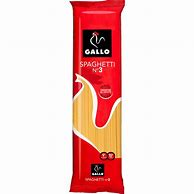
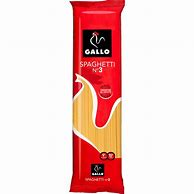

Activitats
Como hacer espaguetis con salchicha
ingredientes
6 tomates
.jpg) Un paquete de espaguetis

Aceite
Un paquete de espaguetis

Aceite
.jpg) 5 salchichas
media cebolla
5 salchichas
media cebolla
.jpg) 1 pimiento
1 pimiento
.jpg) Media cucharadita de ajo picado
Media cucharadita de ajo picado
.jpg)
Receta
- Corta las salchichas en trozos pequeñitos.
- Atraviesa las salchichas con 3 o 4 espaguetis, que pasen por en medio de éstas.
- Corta los tomates en cubitos sumamente pequeños, lo mismo con el pimiento, al cual quítale las semillas.
- Corta las cebollas en rebanadas.
- Coloca los espaguetis (incluyendo aquéllos que tienen salchichas) en una olla y prepara con agua, como lo harías normalmente con la pasta. Deja que se cocinen hasta que esté al dente el espagueti. Reserva.
- En una sartén con aceite, sofríe la cebolla, el tomate y el pimiento, añade sal al gusto y mezcla por 2 minutos.
- Aplasta la mezcla de tomate lo más que puedas, como si quisieras hacer un puré.
- Agrega el espagueti con salchicha y vuelve a mezclar, deja cocinar por 2 minutos más.